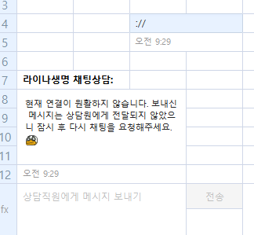

aws elb waf 403 error
problem
상담톡 연동 서비스를 구축해서 오픈까지 한 상태에서 특정 메시지만 상담 어플리케이션에 표시되지 않고 에러 메시지가 온다는 문의가 왔었습니다.
에러메시지 유형을 보니 카카오쪽에서 저희쪽 서드파티 서버로 전송에 실패한 경우, 카카오에서 고객에게 내보내는 메시지였는데요
cause
원인파악까지 이틀 정도 넘게 걸렸던 것 같습니다.
aws로 구축한 사이트였는데, waf와 elb를 걸쳐서 메시지가 도달하고 있기 때문에
어느 구간에서 에러가 났는지 확인이 필요했습니다.
try1. 어느 구간까지 도달하는지 로그 체크
제가 확인이 가능한 부분은 서드파티 서버 뿐이여서 체크해보니 전혀 해당 시점에 메시지가 로깅되는 로그는 없었습니다.
try2. elb 및 waf 체크
솔루션 업체에 연락해서 당일 에러로그만 필터링해서 전달 요청했습니다.
https 2021-07-22T03:26:08.923663Z app/e64c01e680374
- -1 -1 -1 403 - 472 271 "POST https://~~:443/message HTTP/1.1"
"AHC/2.0" ECDHE-RSA-AES128-GCM-SHA256 TLSv1.2
"~~"
-1 2021-07-22T03:26:08.915000Z "waf" "-" "-" "-" "-" "-" "-"
유일한 에러가 403이였는데요..
403이여서 첨에는 무시했었습니다. ㅠㅜ…
try3
원인을 알아낼 수 있었던 것은 사실 때려맞춰보는 심정으로 해보다가 파악할 수 있었습니다.
현업의 말과 다르게 일부 메시지만 실패가 나고 있었고
특히 카카오톡으로 첨부파일을 첨부한 경우만 발생하는 것으로 특정할 수 있었습니다.
일반 메시지와 첨부파일 차이라고 한다면..
POST API Body 부분에 https:// ~ 와 같은 첨부파일 url이 들어가는 것이였는데요.

역시나 ://로 일반 메시지에 넣어보니 403 에러로 waf로그에 찍혀있었습니다.
solution
솔루션 업체쪽에 문의해보니 waf에 있는 rule에 의해 필터가 되고 있고
필터될 경우 카카오서버쪽으로 403으로 리턴시키고 있었습니다.
그래서 룰 변경 요청으로 해결했습니다.
waf rule
waf에서 block
| GenericRFI_BODY | 요청 본문의 값을 검사하고 웹 애플리케이션에서 원격 파일 포함 (RFI, Remote File Inclusion)을 도용하는 경우 제어 ex) :// | | — | — |
| 필드 | 설명 | 값 |
|---|---|---|
| type | https | |
| 시간 | 2021-07-22T03:26:08.923663Z | |
| elb | app/ | |
| client:port | ||
| target:port | AWS WAF에서 요청을 차단한 경우, 이 값은 -로 설정되고 elb_status_code 값은 403으로 설정됩니다. | - |
| request_processing_time | 로드 밸런서가 대상으로 요청을 디스패치할 수 없는 경우 이 값은 -1로 설정됩니다. | -1 |
| target_processing_time | 로드 밸런서가 대상으로 요청을 디스패치할 수 없는 경우 이 값은 -1로 설정됩니다. | -1 |
| response_processing_time | 로드 밸런서가 대상으로 요청을 전송할 수 없는 경우 이 값은 -1로 설정됩니다. | -1 |
| elb_status_code | 로드 밸런서의 응답 상태 코드입니다. | 403 |
| target_status_code | 대상의 응답 상태 코드입니다. 대상으로 연결이 설정되고 대상이 응답을 전송한 경우에만 이 값이 기록됩니다. 그렇지 않으면 -에 설정됩니다. | - |
| received_bytes | 472 | |
| sent_bytes | 271 | |
| “요청” | POST https://~/message HTTP/1.1 | |
| “user_agent” | AHC/2.0 | |
| ssl_cipher | ECDHE-RSA-AES128-GCM-SHA256 | |
| ssl_protocol | TLSv1.2 | |
| target_group_arn | arn:aws:elasticloadbalancing: | |
| “trace_id” | ||
| “domain_name” | ||
| “chosen_cert_arn” | ||
| matched_rule_priority | -1 | |
| request_creation_time | 2021-07-22T03:26:08.915000Z | |
| “실행된 작업” | waf — 로드 밸런서는 요청을 대상으로 전달해야 하는지 여부를 결정하기 위해 AWS WAF로 요청을 전달했습니다. 이것이 최종 조치인 경우 AWS WAF에서는 요청을 거부해야 한다고 결정했습니다. | waf |
| “redirect_url” | - | |
| “error_reason” | - | |
| “target:port_list” | - | |
| “target_status_code_list” | - | |
| “classification” | - | |
| “classification_reason” | - |